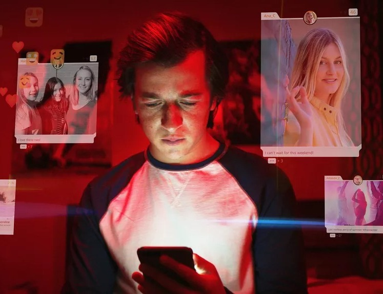
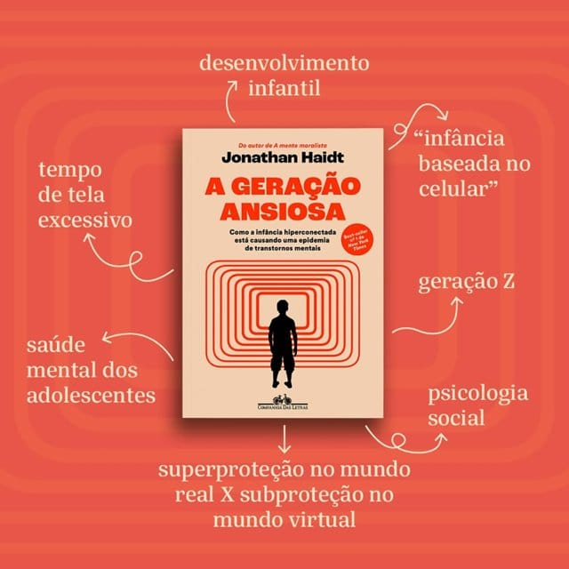

Introduzindo ...
Seja muito bem-vindo ao Off Web! O site apresenta os principais malefícios do uso excessivo de telas e explica como esse hábito afeta o cérebro. Também oferece soluções práticas para reduzir o tempo de exposição, com conteúdos dinâmicos e acessíveis..
Ao todo, são 9 página display: block;s com dados, notícias, dicas, sugestões de atividades e outras informações úteis. Todas as referências utilizadas estão disponíveis no próprio site, ajudando o leitor em sua jornada para um uso mais saudável da tecnologia.
O que vamos abordar?

Nós podemos te ajudar ;
O Off Web também disponibiliza formas diferentes de diminuir o tempo de tela
Tá afim de saber mais sobre?
Clica aqui!
Veja também :
- 
Dilema das Redes
Dirigido por Jeff Orlowski, o documentário alerta sobre o perigo do impacto negativo das redes sociais no mundo, por especialistas do Vale do Silício.
-

A Geração Ansiosa
Focado na juventude, o livro disserta sobre os problemas referentes a saúde mental dos jovens atualmente e faz sugestões de planos para uma infância sem telas.
{kind=link}
{kind=link}
{kind=link}
Faça nosso formulário
Futuramente na página desconecta você verá como sair das telas, uma forma que é muito eficaz e que acreditamos que você irá gostar é realizando novas coisas, criando habilidades e passatempos, para isso criamos um formulário que, além de calcular se o seu tempo de tela está acima do normal, te mostra um hobby para você realizar no seu tempo livre fora das telas.
Formulário
Quantas horas você trabalha/estuda por dia?
Segundo as respostas anteriores, a sua média de uso de tela é
X horas
Você está XX horas acima da média dos brasileiros! O seu consumo de tela é inadequado , para mudar isso recomendamos...
Você está XX horas abaixo da média dos brasileiros! O seu consumo de tela é adequado , porém caso queira diminuir temos uma opção para você!
Você deveria tentar
Segundo suas respostas anteriores, você pode tentar começar a praticar DIY como alternativa para não ficar no celular
Não sabe por onde começar?